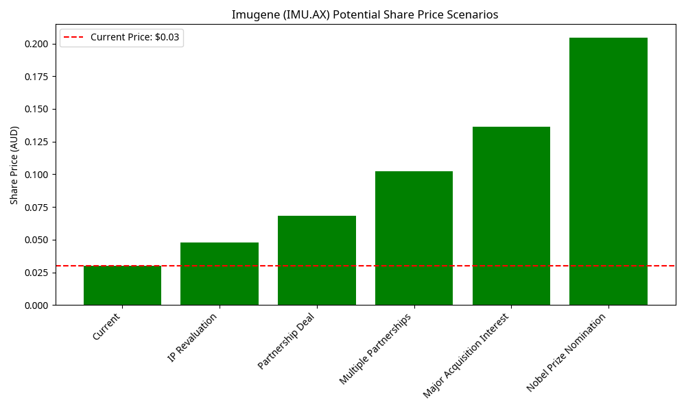

Technical Analysis - Imugene (IMU.AX)
Price Chart with Moving Averages
Imugene (IMU.AX) Price with Moving Averages
The chart below shows Imugene's share price with 20-day, 50-day, and 200-day simple moving averages (SMAs), along with key support and resistance levels.

Technical Indicators
- Current Price: $0.03 AUD
- 20-Day SMA: $0.035 AUD (Price below)
- 50-Day SMA: $0.038 AUD (Price below)
- 200-Day SMA: $0.045 AUD (Price below)
- Support Level: $0.030 AUD
- Resistance Level: $0.047 AUD
Technical Analysis Summary
Imugene's share price is currently trading below all major moving averages, indicating a bearish trend in the short to medium term. The price has been in a downtrend since early 2024, with a series of lower highs and lower lows.
The stock is currently testing a key support level at $0.030. A break below this level could lead to further downside, while a bounce from this level could indicate a potential reversal.
Volume Analysis
Trading Volume Patterns
Recent trading volume has been below average, indicating reduced investor interest. However, there have been occasional volume spikes coinciding with company announcements and clinical trial updates.
Volume Indicators
- Average Daily Volume (3 months): 5.2 million shares
- Average Daily Volume (10 days): 3.8 million shares
- Volume Trend: Declining
The declining volume trend suggests diminishing market interest, which is typical for stocks in a prolonged downtrend. However, this could also indicate a potential bottoming process if accompanied by price stabilization.
Relative Strength Analysis
Relative Performance
Imugene has underperformed both the broader ASX 200 index and the ASX Healthcare sector over the past 12 months.
Relative Performance Metrics
- vs. ASX 200 (12 months): -65%
- vs. ASX Healthcare Index (12 months): -58%
- vs. ASX Biotech Peers (12 months): -42%
This significant underperformance reflects both sector-specific challenges and company-specific factors, including clinical trial timelines and cash burn concerns.
Share Price Scenarios
Potential Share Price Targets
Based on technical analysis and potential catalysts, the following price scenarios have been identified:
Technical Price Targets
- Bearish Case: $0.020 (33% downside) - Break below support with no positive catalysts
- Base Case: $0.045-0.050 (50-67% upside) - Successful trial results and improved market sentiment
- Bullish Case: $0.080-0.100 (167-233% upside) - Multiple positive catalysts and partnership announcements
Technical Trading Recommendations
Trading Strategy Based on Technical Analysis
Short-Term Traders (1-3 months)
Recommendation: Neutral with bearish bias
Current technical indicators suggest caution for short-term traders. The stock is in a downtrend below all major moving averages, but is testing a key support level. Consider waiting for confirmation of a bounce from support before establishing new positions.
Medium-Term Traders (3-12 months)
Recommendation: Accumulate on weakness
For medium-term traders with higher risk tolerance, the current price levels near multi-year lows may present accumulation opportunities. Consider establishing partial positions at current levels with plans to add on either confirmation of support or positive catalyst announcements.
Key Technical Levels to Watch
- Support: $0.030 (current), $0.025 (secondary)
- Resistance: $0.035 (20-day SMA), $0.047 (recent high)
- Volume Trigger: Daily volume exceeding 10 million shares could signal increased interest